IDASimulator is a plugin that allows IDA users to easily augment / replace executable code inside a debugged process with Python code.
Specifically, IDASimulator makes use of conditional breakpoints in the IDA debugger to hijack the execution flow of a process and invoke Python handler functions whenever particular code blocks are executed. With support for multiple target architectures, it handles details such as register initialization, memory allocation, pointers, function arguments and return values seamlessly and transparently, making it easy to replace, modify and subvert existing functionality (or lack thereof) in the target process.
IDASimulator currently supports the x86, x86_64, ARM and MIPS32 architectures. Porting to other architectures is very easy.
The IDASimulator plugin and its associated IDASim python module can be installed with the install.py script:
$ python install.py /path/to/ida/install/directory
The IDASimulator plugin can be activated through the plugins menu, or by pressing the Alt+0 hotkey:
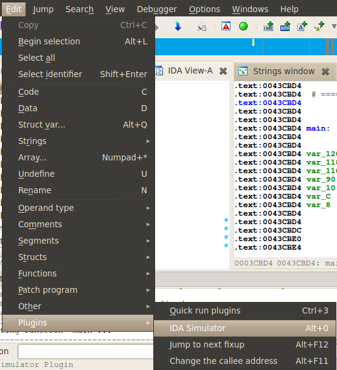
The IDASimulator window displays all of the named locations in the current IDB that it has handlers for:
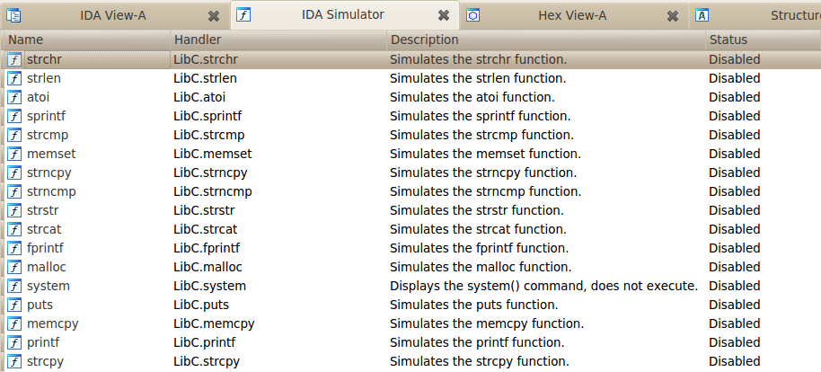
Double-clicking on an entry will enable/disable the selected handler:
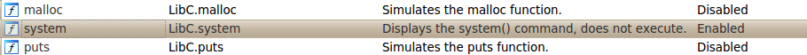
The right-click menu in the IDASimulator window provides a variety of additional options:
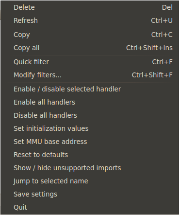
The Enable/disable selected handlers option is synonymous with double-clicking on a handler, as described above.
The Enable all handlers and Disable all handlers options will respecitvely enable or disable all displayed handlers.
The Reset to defaults option will remove all changes you have made and disable all handlers.
The Show / hide unsupported imports option displays or hides all imports that do not have associated IDASimulator handlers.
The Jump to selected name option will take you to the location of the selected name in IDA's disassembly window.
The Save settings option saves all of the current IDASimulator settings for that IDB. This is also done automatically whenever the IDASimulator window is closed.
The Quit option will save the current settings and disable the IDASimulator plugin (just closing the IDASimulator window does not disable the plugin).
The Set MMU base address option allows you to manually control the start address of where IDASimulator handler data (such as strings) is allocated in memory. This is normally auto-detected, but in some cases may need to be explicitly controlled:
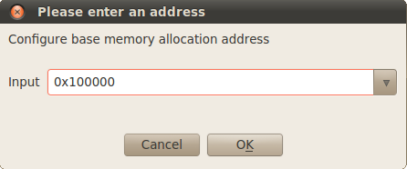
The Set initialization values option allows you to define the initialization values of registers and define python statements, as well as control when those initializations are exercised. By default, they will be invoked when the debugger is started/attached:
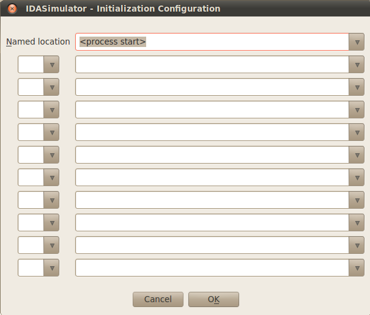
When process execution reaches the specified named location, the specified settings will be applied:
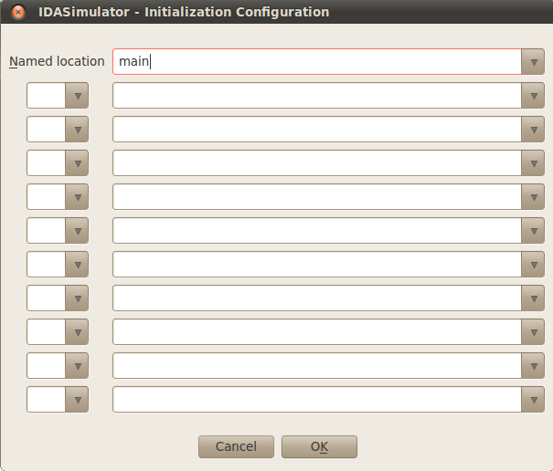
Note that if the location named in the Initialization Configuration conflicts with a handler name, the handler for that named location will be removed and replaced with the Initialization Configuration handler.
Up to ten registers may be specified. Their values may be assigned an integer value (decimal or hexadecimal), a quoted string value (the string will be allocated in memory and the register will be populated with the address of the string), or as the result of an IDASim or Achitecture method call:
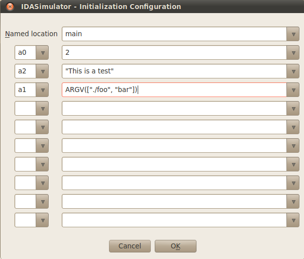
Valid Python expressions may also be included in the register assignment:
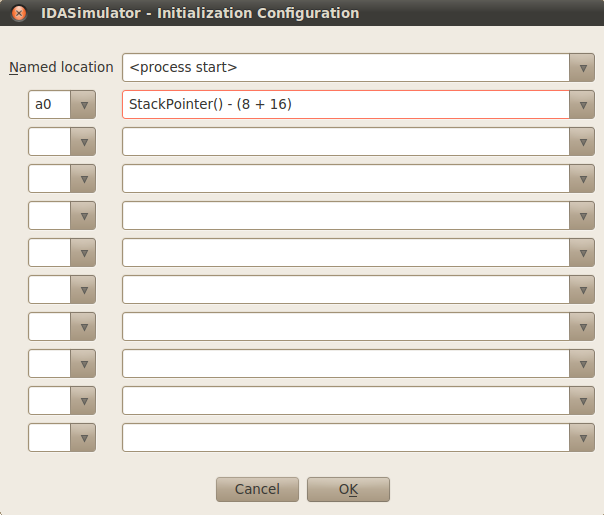
And if no register is specified, arbitrary Python statements may be entered into the value field:
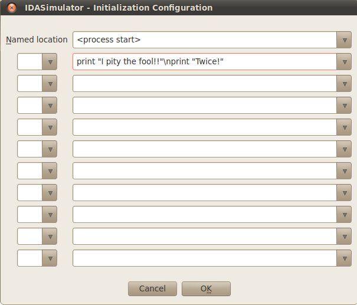
When the IDASimulator plugin is activated, it creates a global instance of the IDASim class named 'IDASIM'. This global class instance is available for use in any IDAPython statement, and can be invoked manually from the command line during a debugging session:
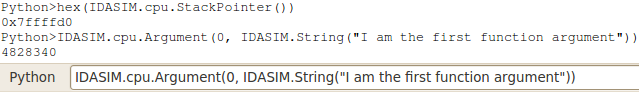
IDAPython scripts invoked while the IDASimulator plugin is active should use the IDASIM class instance rather than creating a new class instance. Multiple class instances in use at the same time can result in corruption of data allocated by IDASim, due to multiple active instances of IDASimMMU. If multiple instances of IDASim are necessary, care should be taken to ensure that the base addresses used for memory allocation by the various instances of IDASimMMU are sufficiently different.
Although IDASimulator comes with a set of handlers for common library and API functions, its real power is the ability to easily craft custom handlers for your target process.
IDASimulator handler files are installed to the plugins/idasimlib subdirectory of the IDA install path. Each handler file must have a .py file extension, and must contain at least one uniquely named class. The constructor for each class must accept one argument, which will be an instance of the IDASim class:
class MyHandlerClass: def __init__(self, idasim): self.idasim = idasim
Every member of the class that does not start with an underscore will be loaded as a handler function:
class MyHandlerClass: def __init__(self, idasim): self.idasim = idasim # Handler for the function named 'strcpy' # Writes a NULL-terminated string from src to the dst address. def strcpy(self, dst, srcstr=''): ''' A test to simulate strcpy functionality. ''' idc.DbgWrite(dst, srcstr + "\x00") return dst # Handler for the function named 'strdup' # Returns a NULL-terminated string, which will be automatically allocated in memory def strdup(self, src=''): return src + "\x00"
If a handler accepts arguments, the appropriate arguments will be passed to the handler, just as they were passed to the original function. For arguments that accept pointers to NULL-terminated strings, the default value may be defined as a string type. In this case, instead of being passed the raw argument value (the pointer to the string), the actual string value will be supplied.
Handlers can also access function arguments via the Architecture.Arguments method. An instance of the Architecture class is available through the cpu member of the IDASim class instance.
A handler can return an integer, string, None, or raise a JumpTo or GoTo exception. See the IDASim documentation for more details.
With the handlers written and the file placed in the idasimlib directory, refresh the IDASimulator window to load the new handlers (Right Click -> Refresh, or Ctl+U):
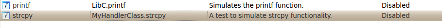